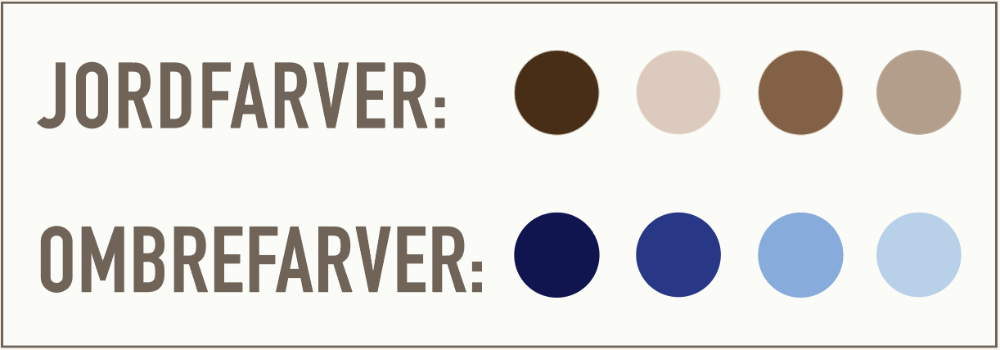

HÆKLING MED FLERE FARVER
Farvekombinationer kan tilføje dybde til dine hækleprojekter og give dem et unikt udseende. Ønsker du at hækle med flere farver, giver vi dig her inspiration til hvilke farver du kan kombinere.
JORDFARVER:
Kombiner naturlige jordfarver som brun, grøn og beige for at skabe en rustik og varm følelse. Dette er ideelt til tæpper og hæklede accessories.
OMBREFARVER:
Brug en overgang af nuancer fra lys til mørk eller omvendt for at skabe en smuk ombre-effekt i dit projekt.
KONTRASTFARVER:
Brug farver, der er modsat hinanden på farvehjulet, som f.eks. rød og grøn eller blå og orange, for at skabe en livlig og iøjnefaldende effekt.
REGNBUEFARVER:
Brug alle farver i regnbuen for at skabe et festligt og glad udtryk. Dette er godt til projekter til børn og til særlige lejligheder.
RETROFARVER:
Brug dæmpede og støvede farver som olivengrøn, babyblå og kirsebærrød for at give dit projekt et mere retro look.

HÆKLETIP: Hvis du kan lide at inddrage forskellige farvekombinationer i dine hækleprojekter, kan du med fordel benytte restgarn, da de ofte købes i mindre mængder, og dermed har du mulighed for at blande flere farver og til få penge. Læs mere om dette i vores artikel om tips til genbrugsgarn, som du finder her.